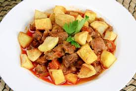

Et yemeği sevenlerin karşı koyamadığı bir lezzet, tas kebabı. Sebzelerin ve etin aynı tabakta buluştuğu bu yemek her lokmada ayrı sevdiriyor. Şimdiden kolay gelsin ve afiyet olsun...

Tas kebabı
Malzemeler
- 500 gram kuzu kuşbaşı
- 1 adet soğan
- 2 adet patates
- 1 adet havuç
- 1 yemek kaşığı domates salçası
- 2 yemek kaşığı tereyağı
- 2 su bardağı sıcak su
- Kekik
- Karabiber
- Tuz
Nasıl yapılır?
- Tencereyi ocağa alın ve tereyağını eritin.
- Eti ekleyin ve suyunu salıp çekene kadar kavurun.
- Soğanı yemeklik doğrayın ve sarımsakları soyup tencereye ekleyin.
- Renk alana kadar et ile beraber kavurun.
- Ardından salçayı ekleyip karıştırın. Üzerine sıcak suyu ilave edin.
- Havuç ve patatesleri de küp küp doğrayıp ekleyin.
- En son yemeğinizin üzerine baharatları serpip kısık ateşte 30 dakika kadar pişirin.
- Sos kıvamına gelince yemeğiniz hazır olacaktır.
İŞTE PÜF NOKTALAR!!!
- Tas kebabının içerisinde yer alan baharatların dengeli olması ve et ile birlikte uygun bir tat oluşturması gerekmektedir. Bunun için içerisinde kekik ve pul biber gibi et ile uyumlu olan baharatlar katılmalıdır.
- İçerisinde kullanılmakta olan yağın daha yanmayan ve tat verici özelliğinin olması, tadı zengin bir hale getirecektir. Tadının zengin olmasında ürünlerin katılma sırası da oldukça önemlidir. Bu sayede dengeli bir pişirme sağlanacaktır.
AFİYET OLSUN